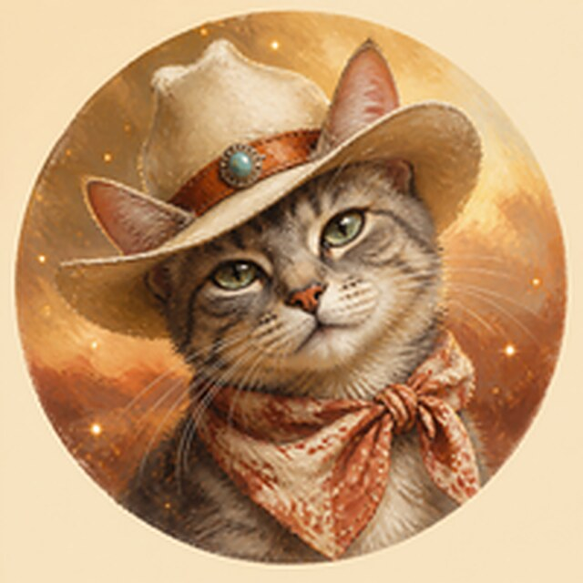
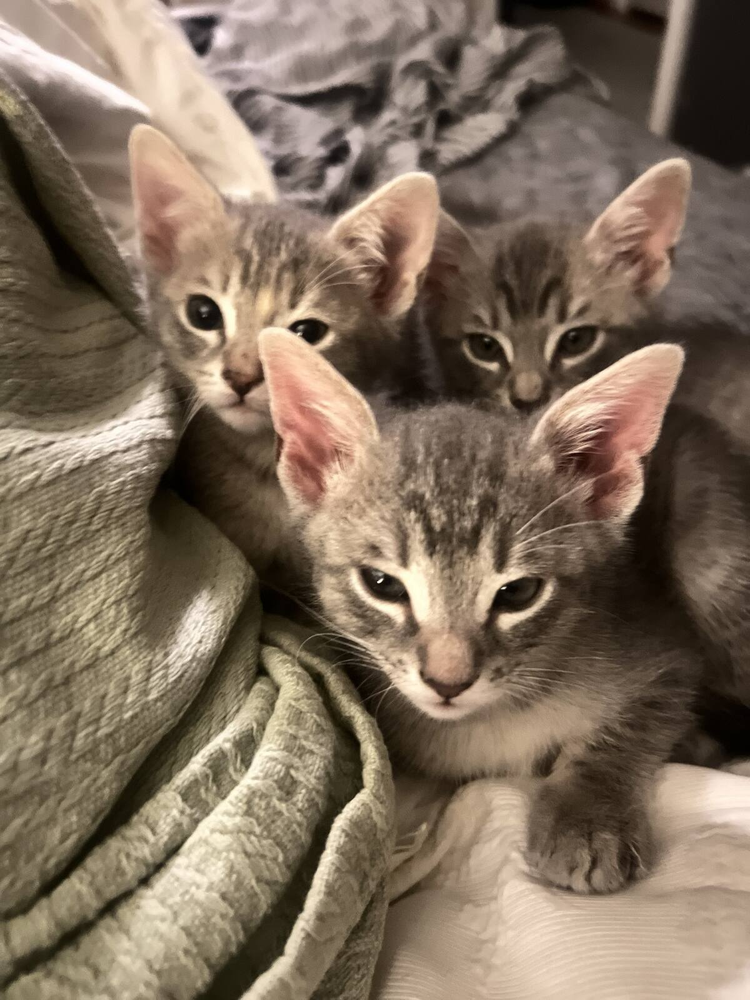

<title>Dallas Cat Lady</title>
<meta name="claude:viewport-fit-sides" content="cover">
<meta name="description" content="Dallas Cat Lady is an all-volunteer, foster-based cat rescue placing cats into loving homes across Dallas since 2006. Donate today.">
<link rel="icon" href="assets/favicon.png">
<link rel="preconnect" href="https://fonts.googleapis.com">
<link rel="preconnect" href="https://fonts.gstatic.com" crossorigin>
<link rel="stylesheet" href="https://fonts.googleapis.com/css2?family=Instrument+Serif:ital@0;1&family=Figtree:wght@400;500;600;700&family=Rye&display=swap">
<style>
/* Layout: a warm "porch-light" page. Painted medallion + give box share the hero,
   faded kittens and cat silhouettes sit between a paper-grain ground and the text,
   then trust (partners, numbers, referrals) leads straight back to the gift. */
:root{
  --ground:#f7e6d3;      /* sunlit honey paper */
  --ground-2:#f1d6bd;    /* deeper band */
  --card:#fff8f0;
  --ink:#3b2420;         /* cocoa */
  --ink-soft:#6d4c43;
  --rose:#b5523b;        /* Texas clay, the one bold accent */
  --rose-ink:#fff6ef;
  --sage:#7f8f6a;        /* the kittens' blanket */
  --gold:#d8a24a;        /* sparkles */
  --line:#e2c3a8;
  --cat-tint:#7a4a36;
  --font-display:"Instrument Serif", "Iowan Old Style", Georgia, serif;
  --font-body:"Figtree", "Segoe UI", system-ui, sans-serif;
  --font-west:"Rye", "Instrument Serif", Georgia, serif;
  --r:14px;
}
@media (prefers-color-scheme: dark){:root:not([data-theme="light"]){
  --ground:#241713; --ground-2:#2d1d17; --card:#33221b;
  --ink:#f7e6d3; --ink-soft:#d2b29c; --rose:#e07a5f; --rose-ink:#2a1610;
  --sage:#a7b78f; --gold:#e8b85c; --line:#4a3128; --cat-tint:#e9c3a6; color-scheme:dark;
}}
:root[data-theme="dark"]{
  --ground:#241713; --ground-2:#2d1d17; --card:#33221b;
  --ink:#f7e6d3; --ink-soft:#d2b29c; --rose:#e07a5f; --rose-ink:#2a1610;
  --sage:#a7b78f; --gold:#e8b85c; --line:#4a3128; --cat-tint:#e9c3a6; color-scheme:dark;
}

*{box-sizing:border-box}
body{
  margin:0; background:var(--ground); color:var(--ink);
  font:400 17px/1.6 var(--font-body);
  position:relative; overflow-x:hidden;
}
/* paper / canvas grain over everything */
body::after{
  content:""; position:fixed; inset:0; pointer-events:none; z-index:0; opacity:.38; mix-blend-mode:multiply;
  background-image:url("data:image/svg+xml,%3Csvg xmlns='http://www.w3.org/2000/svg' width='220' height='220'%3E%3Cfilter id='n'%3E%3CfeTurbulence type='fractalNoise' baseFrequency='.85' numOctaves='3' stitchTiles='stitch'/%3E%3CfeColorMatrix values='0 0 0 0 .45 0 0 0 0 .3 0 0 0 0 .2 0 0 0 .55 0'/%3E%3C/filter%3E%3Crect width='100%25' height='100%25' filter='url(%23n)'/%3E%3C/svg%3E");
}
body::before{content:"";position:fixed;inset:0 0 auto;height:env(safe-area-inset-top,0px);z-index:10;background:var(--ground)}
.wrap{max-width:1160px;margin:0 auto;padding-left:max(16px,env(safe-area-inset-left,0px));padding-right:max(16px,env(safe-area-inset-right,0px));position:relative;z-index:1}
a{color:inherit}
h1,h2,h3{font-family:var(--font-display);font-weight:400;line-height:1.05;text-wrap:balance;margin:0}
h2{font-size:clamp(2.1rem,4.4vw,3.2rem)}
h2 em,h1 em{color:var(--rose)}
p{margin:0}
.eyebrow{font:600 .78rem/1 var(--font-body);letter-spacing:.14em;text-transform:uppercase;color:var(--sage)}
:focus-visible{outline:3px solid var(--rose);outline-offset:3px;border-radius:6px}

/* faded cat silhouettes, reused */
.ghost{position:absolute;pointer-events:none;color:var(--cat-tint);opacity:.08;z-index:0}

/* ---------- header ---------- */
header{position:sticky;top:env(safe-area-inset-top,0px);z-index:20;background:color-mix(in srgb,var(--ground) 88%,transparent);backdrop-filter:blur(8px);border-bottom:1px solid var(--line)}
header .wrap{display:flex;align-items:center;justify-content:space-between;gap:16px;padding-block:10px}
.brand{display:flex;align-items:center;gap:12px;text-decoration:none}
.brand img{width:52px;height:52px;border-radius:50%;box-shadow:0 0 0 2px var(--gold)}
.brand span{font:400 1.25rem/1 var(--font-west);letter-spacing:.02em}
nav{display:flex;align-items:center;gap:22px;font-weight:500;font-size:.95rem}
nav a:not(.btn){text-decoration:none;color:var(--ink-soft)}
nav a:not(.btn):hover{color:var(--rose)}
@media (max-width:760px){nav a:not(.btn){display:none}}
.btn{display:inline-flex;align-items:center;justify-content:center;gap:8px;border:0;cursor:pointer;text-decoration:none;
  background:var(--rose);color:var(--rose-ink);font:700 1rem/1 var(--font-body);padding:14px 22px;border-radius:999px;
  box-shadow:0 6px 18px -8px color-mix(in srgb,var(--rose) 70%,transparent);transition:transform .15s}
.btn:hover{transform:translateY(-1px)}
.btn.ghosty{background:transparent;color:var(--ink);box-shadow:inset 0 0 0 1.5px var(--ink-soft)}

/* ---------- hero ---------- */
.hero{position:relative;overflow:hidden;padding-block:56px 72px}
.hero-photo{position:absolute;inset:0;z-index:0;pointer-events:none;
  background:url("assets/kittens.jpg") 78% 30%/cover no-repeat;
  opacity:.17;filter:sepia(.6) saturate(.8);mix-blend-mode:multiply;
  -webkit-mask-image:linear-gradient(100deg,transparent 18%,#000 62%);mask-image:linear-gradient(100deg,transparent 18%,#000 62%)}
@media (prefers-color-scheme: dark){:root:not([data-theme="light"]) .hero-photo{mix-blend-mode:screen;opacity:.12}}
:root[data-theme="dark"] .hero-photo{mix-blend-mode:screen;opacity:.12}
.hero .wrap{display:grid;grid-template-columns:1.15fr .85fr;gap:48px;align-items:center}
@media (max-width:900px){.hero .wrap{grid-template-columns:1fr}.medallion{order:-1}}
.hero h1{font-size:clamp(2.9rem,6.6vw,5.4rem);margin-top:14px}
.hero h1 em{font-style:italic}
.lede{font-size:1.15rem;color:var(--ink-soft);max-width:34em;margin-top:18px}

.give{margin-top:28px;background:var(--card);border:1px solid var(--line);border-radius:20px;padding:22px;max-width:520px;box-shadow:0 20px 50px -30px rgba(80,40,20,.45)}
.give-top{display:flex;justify-content:space-between;align-items:center;gap:12px;flex-wrap:wrap}
.give-top strong{font-family:var(--font-display);font-size:1.6rem;font-weight:400}
.freq{display:inline-flex;background:var(--ground-2);border-radius:999px;padding:4px}
.freq button{border:0;background:transparent;color:var(--ink-soft);font:600 .85rem var(--font-body);padding:8px 14px;border-radius:999px;cursor:pointer}
.freq button[aria-pressed="true"]{background:var(--card);color:var(--ink);box-shadow:0 1px 4px rgba(0,0,0,.12)}
.amounts{display:grid;grid-template-columns:repeat(4,1fr);gap:8px;margin-top:16px}
.amounts button{border:1.5px solid var(--line);background:transparent;color:var(--ink);border-radius:12px;padding:12px 0;font:700 1.05rem var(--font-body);cursor:pointer;font-variant-numeric:tabular-nums}
.amounts button[aria-pressed="true"]{border-color:var(--rose);background:color-mix(in srgb,var(--rose) 12%,transparent);color:var(--rose)}
.impact{margin-top:14px;min-height:3.2em;color:var(--ink-soft);font-size:.98rem;display:flex;gap:10px;align-items:flex-start}
.impact svg{flex:none;margin-top:3px;color:var(--rose)}
.give .btn{width:100%;margin-top:14px;font-size:1.08rem;padding:17px}
.fine{margin-top:10px;font-size:.8rem;color:var(--ink-soft);text-align:center}

.medallion{position:relative;justify-self:center;width:min(340px,78vw);aspect-ratio:1;max-width:100%}
.medallion img{width:100%;height:100%;border-radius:50%;object-fit:cover;position:relative;z-index:1;
  box-shadow:0 0 0 6px var(--card),0 0 0 8px var(--gold),0 30px 70px -30px rgba(90,40,10,.7)}
.medallion .tag{position:absolute;z-index:2;left:50%;bottom:-14px;transform:translateX(-50%) rotate(-3deg);white-space:nowrap;
  background:var(--ink);color:var(--ground);font:400 1rem/1 var(--font-west);padding:10px 18px;border-radius:6px}
.spark{position:absolute;z-index:3;width:var(--s,18px);height:var(--s,18px);color:var(--gold);animation:twinkle 2.8s ease-in-out infinite;animation-delay:var(--d,0s)}
@keyframes twinkle{0%,100%{opacity:.25;transform:scale(.6) rotate(0)}50%{opacity:1;transform:scale(1) rotate(25deg)}}
@media (prefers-reduced-motion:reduce){.spark{animation:none;opacity:.8}}

/* ---------- partners ---------- */
.partners{background:var(--ground-2);border-block:1px solid var(--line);position:relative;overflow:hidden}
.partners .wrap{padding-block:36px;display:grid;gap:18px}
.partners p.lab{color:var(--ink-soft);font-size:.95rem}
.chips{display:flex;flex-wrap:wrap;gap:10px}
.chip{display:inline-flex;align-items:center;gap:8px;background:var(--card);border:1px solid var(--line);border-radius:999px;padding:8px 14px;font-size:.92rem;font-weight:500}
.chip i{width:8px;height:8px;border-radius:50%;background:var(--sage);flex:none}
.chip.city i{background:var(--rose)}

/* ---------- numbers ---------- */
section{position:relative}
main{overflow-x:clip}
.block{padding-block:84px}
.numbers{display:grid;grid-template-columns:repeat(4,1fr);gap:0;margin-top:36px;border-top:1px solid var(--line)}
@media (max-width:820px){.numbers{grid-template-columns:repeat(2,1fr)}}
.num{padding:24px 18px 8px 0}
.num b{display:block;font:400 clamp(2.6rem,5vw,3.8rem)/1 var(--font-display);color:var(--rose);font-variant-numeric:tabular-nums}
.num span{display:block;margin-top:8px;color:var(--ink-soft);font-size:.95rem;max-width:18em}

/* ---------- referrals ---------- */
.refs{display:grid;grid-template-columns:repeat(2,1fr);gap:20px;margin-top:36px}
@media (max-width:760px){.refs{grid-template-columns:1fr}}
.ref{background:var(--card);border:1px solid var(--line);border-radius:var(--r);padding:26px 26px 22px;display:flex;flex-direction:column;gap:14px;position:relative;overflow:hidden}
.ref .stars{display:flex;gap:3px;color:var(--gold)}
.ref blockquote{margin:0;font:400 1.45rem/1.3 var(--font-display)}
.ref footer{margin-top:auto;display:flex;justify-content:space-between;align-items:flex-end;gap:12px;font-size:.9rem;color:var(--ink-soft);flex-wrap:wrap}
.ref footer strong{display:block;color:var(--ink);font-size:1rem}
.ref footer a{font-size:.8rem;color:var(--ink-soft)}
.ref .ghost{right:-20px;bottom:-24px;width:140px;opacity:.06}

/* ---------- how it works ---------- */
.how{background:var(--ground-2);border-block:1px solid var(--line);overflow:hidden}
.how .wrap{display:grid;grid-template-columns:.9fr 1.1fr;gap:56px;align-items:center}
@media (max-width:860px){.how .wrap{grid-template-columns:1fr}}
.how figure{margin:0;position:relative}
.how figure img{width:100%;border-radius:200px 200px 18px 18px;display:block;aspect-ratio:4/5;object-fit:cover;object-position:50% 40%}
.how figcaption{font-size:.85rem;color:var(--ink-soft);margin-top:10px}
.path{list-style:none;margin:28px 0 0;padding:0;display:grid;gap:22px}
.path li{display:grid;grid-template-columns:44px 1fr;gap:16px;align-items:start}
.path .dot{width:44px;height:44px;border-radius:50%;display:grid;place-items:center;background:var(--card);border:1.5px solid var(--rose);color:var(--rose);font:400 1.3rem/1 var(--font-display)}
.path h3{font-size:1.5rem}
.path p{color:var(--ink-soft);margin-top:4px}

/* ---------- gift tiers ---------- */
.tiers{display:grid;grid-template-columns:repeat(3,1fr);gap:20px;margin-top:36px}
@media (max-width:860px){.tiers{grid-template-columns:1fr}}
.tier{border-top:3px solid var(--rose);padding-top:18px}
.tier b{font:400 2.6rem/1 var(--font-display);font-variant-numeric:tabular-nums}
.tier h3{font-family:var(--font-body);font-weight:700;font-size:1.05rem;margin-top:10px}
.tier p{color:var(--ink-soft);margin-top:6px}

/* ---------- final CTA ---------- */
.final{background:var(--ink);color:var(--ground);overflow:hidden}
.final .wrap{padding-block:84px;display:grid;grid-template-columns:1fr auto;gap:36px;align-items:center}
@media (max-width:820px){.final .wrap{grid-template-columns:1fr}}
.final h2 em{color:var(--gold)}
.final p{color:color-mix(in srgb,var(--ground) 78%,transparent);margin-top:14px;max-width:36em}
.final .ctas{display:flex;flex-direction:column;gap:12px;min-width:min(280px,100%)}
.final .btn.ghosty{color:var(--ground);box-shadow:inset 0 0 0 1.5px color-mix(in srgb,var(--ground) 50%,transparent)}
.final .ghost{color:var(--ground);opacity:.07}

.site-foot .wrap{padding-block:36px;display:flex;flex-wrap:wrap;gap:18px;justify-content:space-between;font-size:.88rem;color:var(--ink-soft)}
.sources{font-size:.8rem;color:var(--ink-soft);margin-top:22px;max-width:70em}
.sources a{color:var(--ink-soft)}
</style>

<svg width="0" height="0" style="position:absolute" aria-hidden="true">
  <defs>
    <!-- sitting cat silhouette -->
    <symbol id="cat" viewBox="0 0 100 120"><path fill="currentColor" d="M30 10 L38 30 Q50 26 62 30 L70 10 L74 36 Q82 46 80 58 Q90 72 88 92 Q86 112 66 116 L34 116 Q14 112 12 92 Q10 72 20 58 Q18 46 26 36 Z M84 104 Q100 98 98 80 Q97 70 92 66 Q96 80 90 92 Z"/></symbol>
    <!-- lying cat silhouette -->
    <symbol id="cat-lie" viewBox="0 0 160 80"><path fill="currentColor" d="M18 22 L24 36 Q32 33 40 36 L46 22 L48 42 Q52 50 50 56 L120 52 Q146 50 150 64 Q152 74 140 76 L30 76 Q12 74 12 58 Q12 48 18 44 Z M140 62 Q158 54 156 38 Q150 50 138 56 Z"/></symbol>
    <symbol id="sparkle" viewBox="0 0 24 24"><path fill="currentColor" d="M12 0 C13 7 17 11 24 12 C17 13 13 17 12 24 C11 17 7 13 0 12 C7 11 11 7 12 0Z"/></symbol>
    <symbol id="paw" viewBox="0 0 24 24"><path fill="currentColor" d="M12 13c-3.3 0-6 2.6-6 5.2 0 1.6 1.3 2.8 3 2.8 1.2 0 2-.6 3-.6s1.8.6 3 .6c1.7 0 3-1.2 3-2.8 0-2.6-2.7-5.2-6-5.2zM6.5 11.5a2 2.5 0 1 0 0-.01zM10 7.5a2 2.6 0 1 0 0-.01zM14 7.5a2 2.6 0 1 0 0-.01zM17.5 11.5a2 2.5 0 1 0 0-.01z"/></symbol>
    <symbol id="star" viewBox="0 0 24 24"><path fill="currentColor" d="M12 2l2.9 6.6 7.1.6-5.4 4.7 1.6 7L12 17.3 5.8 21l1.6-7L2 9.2l7.1-.6z"/></symbol>
  </defs>
</svg>

<header>
  <div class="wrap">
    <a class="brand" href="#top"><span>Dallas Cat Lady</span></a>
    <nav aria-label="Main">
      <a href="#trust">Who trusts us</a>
      <a href="#how">How we help</a>
      <a href="https://www.petfinder.com/member/us/tx/dallas/dallas-cat-lady-adoptions-tx221/" target="_blank" rel="noopener">Adopt</a>
      <a class="btn" href="#give">Donate</a>
    </nav>
  </div>
</header>

<main id="top">
<section class="hero">
  <div class="hero-photo" aria-hidden="true"></div>
  <svg class="ghost" style="left:-30px;top:40px;width:180px;opacity:.06" aria-hidden="true"><use href="#cat"/></svg>
  <svg class="ghost" style="left:34%;bottom:10px;width:220px;opacity:.05" aria-hidden="true"><use href="#cat-lie"/></svg>
  <div class="wrap">
    <div>
      <p class="eyebrow">All-volunteer cat rescue · Dallas, Texas · since 2006</p>
      <h1>Every Dallas cat deserves a <em>soft place</em> to land.</h1>
      <p class="lede">We have no shelter building. Our cats heal on volunteers' couches, then meet their families at six Dallas-area Petco stores. More than 12,000 cats and kittens have gone home this way. Your gift keeps the next litter fed, fixed, and safe.</p>

      <form class="give" id="give" aria-labelledby="give-title">
        <div class="give-top">
          <strong id="give-title">Give a cat a chance</strong>
          <div class="freq" role="group" aria-label="Gift frequency">
            <button type="button" id="f-once" aria-pressed="true">One time</button>
            <button type="button" id="f-month" aria-pressed="false">Monthly</button>
          </div>
        </div>
        <div class="amounts" role="group" aria-label="Gift amount">
          <button type="button" id="a25" data-amt="25" aria-pressed="false">$25</button>
          <button type="button" id="a50" data-amt="50" aria-pressed="true">$50</button>
          <button type="button" id="a100" data-amt="100" aria-pressed="false">$100</button>
          <button type="button" id="a250" data-amt="250" aria-pressed="false">$250</button>
        </div>
        <p class="impact" aria-live="polite"><svg width="18" height="18" aria-hidden="true"><use href="#paw"/></svg><span id="impact-text"></span></p>
        <a class="btn" id="give-btn" href="https://www.northtexasgivingday.org/organization/Dallas-Cat-Lady" target="_blank" rel="noopener">Give $50 today</a>
        <p class="fine">501(c)(3) nonprofit · EIN 45-2647771 · Gifts are tax-deductible</p>
      </form>
    </div>

    <div class="medallion">
      
      <svg class="spark" style="--s:30px;top:2%;left:10%;--d:.2s" aria-hidden="true"><use href="#sparkle"/></svg>
      <svg class="spark" style="--s:18px;top:14%;right:2%;--d:1.1s" aria-hidden="true"><use href="#sparkle"/></svg>
      <svg class="spark" style="--s:24px;top:48%;right:-5%;--d:.6s" aria-hidden="true"><use href="#sparkle"/></svg>
      <svg class="spark" style="--s:14px;bottom:18%;left:-3%;--d:1.6s" aria-hidden="true"><use href="#sparkle"/></svg>
      <svg class="spark" style="--s:20px;top:38%;left:-7%;--d:2.1s" aria-hidden="true"><use href="#sparkle"/></svg>
      <svg class="spark" style="--s:12px;top:-3%;right:30%;--d:1.4s" aria-hidden="true"><use href="#sparkle"/></svg>
      <svg class="spark" style="--s:16px;bottom:6%;right:12%;--d:.9s" aria-hidden="true"><use href="#sparkle"/></svg>
      <span class="tag">Howdy, y'all</span>
    </div>
  </div>
</section>

<section class="partners" aria-labelledby="partners-title">
  <svg class="ghost" style="right:3%;top:-8px;width:120px;opacity:.07" aria-hidden="true"><use href="#cat"/></svg>
  <div class="wrap">
    <p class="eyebrow" id="partners-title">Working alongside Dallas</p>
    <p class="lab">Our cats are on view at Petco stores across the metro, and we work hand in hand with city animal services, adoption networks, and local donors.</p>
    <div class="chips">
      <span class="chip city"><i></i>Petco Casa Linda</span>
      <span class="chip city"><i></i>Petco Prestonwood</span>
      <span class="chip city"><i></i>Petco Richardson</span>
      <span class="chip city"><i></i>Petco Carrollton</span>
      <span class="chip city"><i></i>Petco Las Colinas</span>
      <span class="chip city"><i></i>Petco Mesquite</span>
      <span class="chip"><i></i>Town of Addison &amp; Animal Services</span>
      <span class="chip"><i></i>North Texas Giving Day</span>
      <span class="chip"><i></i>The Lynx Club</span>
      <span class="chip"><i></i>Petfinder</span>
      <span class="chip"><i></i>Adopt-a-Pet</span>
      <span class="chip"><i></i>Chewy Rescue Wish List</span>
    </div>
  </div>
</section>

<section class="block" id="trust" aria-labelledby="trust-title">
  <svg class="ghost" style="right:-40px;top:60px;width:260px;opacity:.05" aria-hidden="true"><use href="#cat"/></svg>
  <div class="wrap">
    <p class="eyebrow">Proof, in Dallas numbers</p>
    <h2 id="trust-title">Neighbors, city hall, and donors <em>vouch for us.</em></h2>
    <div class="numbers">
      <div class="num"><b>12,000+</b><span>cats and kittens placed in loving homes</span></div>
      <div class="num"><b>20</b><span>years rescuing Dallas cats, since 2006</span></div>
      <div class="num"><b>418</b><span>donors in one North Texas Giving Day</span></div>
      <div class="num"><b>100%</b><span>volunteer-run, with every foster home in our community</span></div>
    </div>

    <div class="refs">
      <article class="ref">
        <div class="stars" aria-label="Endorsement"><svg width="18" height="18"><use href="#sparkle"/></svg></div>
        <blockquote>The Town of Addison has funded our spay and neuter work, year after year.</blockquote>
        <footer><div><strong>Town of Addison, TX</strong>City Council grant agreements, 2019 to 2024</div>
          <a href="https://agendas.addisontx.gov/docs/2019/CM/20191112_5575/3319%5FGrant%20Funding%20Agreement%20FY20%20%28Dallas%20Cat%20Lady%29%5Fv2%2Epdf" target="_blank" rel="noopener">Council record</a></footer>
        <svg class="ghost" aria-hidden="true"><use href="#cat"/></svg>
      </article>
      <article class="ref">
        <div class="stars" aria-label="Endorsement"><svg width="18" height="18"><use href="#sparkle"/></svg></div>
        <blockquote>418 North Texans gave $68,639 to Dallas Cat Lady on North Texas Giving Day.</blockquote>
        <footer><div><strong>North Texas Giving Day</strong>Communities Foundation of Texas</div>
          <a href="https://northtexasgivingday.org/organization/Dallas-Cat-Lady" target="_blank" rel="noopener">Campaign page</a></footer>
        <svg class="ghost" aria-hidden="true"><use href="#cat"/></svg>
      </article>
      <article class="ref">
        <div class="stars" aria-label="379 neighbor favorites"><svg width="18" height="18"><use href="#star"/></svg><svg width="18" height="18"><use href="#star"/></svg><svg width="18" height="18"><use href="#star"/></svg><svg width="18" height="18"><use href="#star"/></svg><svg width="18" height="18"><use href="#star"/></svg></div>
        <blockquote>Highly recommended by neighbors for pet adoption and rescue, with 379 Faves.</blockquote>
        <footer><div><strong>Nextdoor neighbors</strong>Dallas-area community page</div>
          <a href="https://us.nextdoor.com/pages/the-dallas-cat-lady-mesquite-tx/" target="_blank" rel="noopener">Nextdoor</a></footer>
        <svg class="ghost" aria-hidden="true"><use href="#cat"/></svg>
      </article>
      <article class="ref">
        <div class="stars" aria-label="Endorsement"><svg width="18" height="18"><use href="#sparkle"/></svg></div>
        <blockquote>The Lynx Club backed our mission with a $15,000 grant.</blockquote>
        <footer><div><strong>The Lynx Club</strong>Grant reported in IRS filings, FY 2023</div>
          <a href="https://causeiq.com/organizations/dallas-cat-lady,452647771" target="_blank" rel="noopener">Filing summary</a></footer>
        <svg class="ghost" aria-hidden="true"><use href="#cat"/></svg>
      </article>
    </div>
  </div>
</section>

<section class="how block" id="how" aria-labelledby="how-title">
  <svg class="ghost" style="left:44%;top:30px;width:240px;opacity:.05" aria-hidden="true"><use href="#cat-lie"/></svg>
  <div class="wrap">
    <figure>
      
      <figcaption>Foster kittens, safe and warm in a volunteer's home.</figcaption>
    </figure>
    <div>
      <p class="eyebrow">Where your gift goes</p>
      <h2 id="how-title">From the street to a <em>forever lap.</em></h2>
      <ol class="path">
        <li><span class="dot">1</span><div><h3>Rescue &amp; TNR</h3><p>Volunteers trap, neuter, and return community cats, working with neighbors and animal services to shrink Dallas's homeless cat population.</p></div></li>
        <li><span class="dot">2</span><div><h3>Foster care</h3><p>No cages and no shelter building. Cats recover, get vetted, and learn to trust people inside volunteer homes.</p></div></li>
        <li><span class="dot">3</span><div><h3>Adoption</h3><p>Families meet cats by appointment and at partner Petco stores, then take home a healthy, fixed, vaccinated companion.</p></div></li>
      </ol>
    </div>
  </div>
</section>

<section class="block" aria-labelledby="tiers-title">
  <div class="wrap">
    <p class="eyebrow">What a gift can do</p>
    <h2 id="tiers-title">Small gifts, <em>big purrs.</em></h2>
    <!-- Suggested-gift descriptions: confirm the exact cost of each item with Dallas Cat Lady before launch. -->
    <div class="tiers">
      <div class="tier"><b>$25</b><h3>Feeds a foster litter</h3><p>Kitten food and litter for a foster home for about a week.</p></div>
      <div class="tier"><b>$50</b><h3>Protects a kitten</h3><p>Helps cover first vaccines and deworming for a new rescue.</p></div>
      <div class="tier"><b>$100</b><h3>Fixes a community cat</h3><p>Helps pay for a spay or neuter so fewer kittens are born on the street.</p></div>
    </div>
  </div>
</section>

<section class="final" aria-labelledby="final-title">
  <svg class="ghost" style="right:6%;bottom:-20px;width:200px" aria-hidden="true"><use href="#cat"/></svg>
  <svg class="ghost" style="left:-20px;top:20px;width:150px" aria-hidden="true"><use href="#cat-lie"/></svg>
  <div class="wrap">
    <div>
      <h2 id="final-title">Somewhere in Dallas tonight, a kitten is <em>waiting on you.</em></h2>
      <p>Every dollar goes to food, vet care, and spay and neuter surgery. There is no building to heat, just volunteers who love cats and a city that shows up for them.</p>
    </div>
    <div class="ctas">
      <a class="btn" href="#give">Donate now</a>
      <a class="btn ghosty" href="https://www.chewy.com/g/dallas-cat-lady_b83641538" target="_blank" rel="noopener">Shop our Chewy wish list</a>
      <a class="btn ghosty" href="https://www.petfinder.com/member/us/tx/dallas/dallas-cat-lady-adoptions-tx221/" target="_blank" rel="noopener">Meet adoptable cats</a>
    </div>
  </div>
</section>
</main>

<footer class="site-foot">
  <div class="wrap">
    <div>
      <div>Dallas Cat Lady · Dallas, TX 75218 · 501(c)(3) EIN 45-2647771</div>
      <p class="sources">Sources: <a href="https://agendas.addisontx.gov/docs/2024/CM/20240723_7274/5461%5FCouncil%5FPresentation%5F%2D%5FDallas%5FCat%5FLady%5F%2D%5FJuly%5F23%2C%5F2024.pdf" target="_blank" rel="noopener">Addison council presentation (12,000+ placements)</a>, <a href="https://northtexasgivingday.org/organization/Dallas-Cat-Lady" target="_blank" rel="noopener">North Texas Giving Day</a>, <a href="https://us.nextdoor.com/pages/the-dallas-cat-lady-mesquite-tx/" target="_blank" rel="noopener">Nextdoor</a>, <a href="https://causeiq.com/organizations/dallas-cat-lady,452647771" target="_blank" rel="noopener">CauseIQ / IRS data</a>, <a href="https://www.guidestar.org/profile/45-2647771" target="_blank" rel="noopener">Candid GuideStar</a>.</p>
    </div>
    <div>Concept redesign · <a href="https://dallascatlady.org" target="_blank" rel="noopener">dallascatlady.org</a></div>
  </div>
</footer>

<script>
(function(){
  var impact={25:"feeds a foster litter for about a week.",50:"helps cover first vaccines for a rescued kitten.",100:"helps fix a community cat so fewer kittens are born outside.",250:"helps carry a mama cat and her litter from rescue to adoption."};
  var amt=50, monthly=false;
  var text=document.getElementById('impact-text'), btn=document.getElementById('give-btn');
  function render(){
    text.textContent=(monthly?"$"+amt+" every month ":"$"+amt+" ")+impact[amt];
    btn.textContent=monthly?"Give $"+amt+" monthly":"Give $"+amt+" today";
  }
  document.querySelectorAll('.amounts button').forEach(function(b){
    b.addEventListener('click',function(){
      document.querySelectorAll('.amounts button').forEach(function(x){x.setAttribute('aria-pressed','false')});
      b.setAttribute('aria-pressed','true'); amt=+b.dataset.amt; render();
    });
  });
  [['f-once',false],['f-month',true]].forEach(function(p){
    document.getElementById(p[0]).addEventListener('click',function(){
      monthly=p[1];
      document.getElementById('f-once').setAttribute('aria-pressed',String(!monthly));
      document.getElementById('f-month').setAttribute('aria-pressed',String(monthly));
      render();
    });
  });
  document.getElementById('give').addEventListener('submit',function(e){e.preventDefault()});
  render();
})();
</script>
